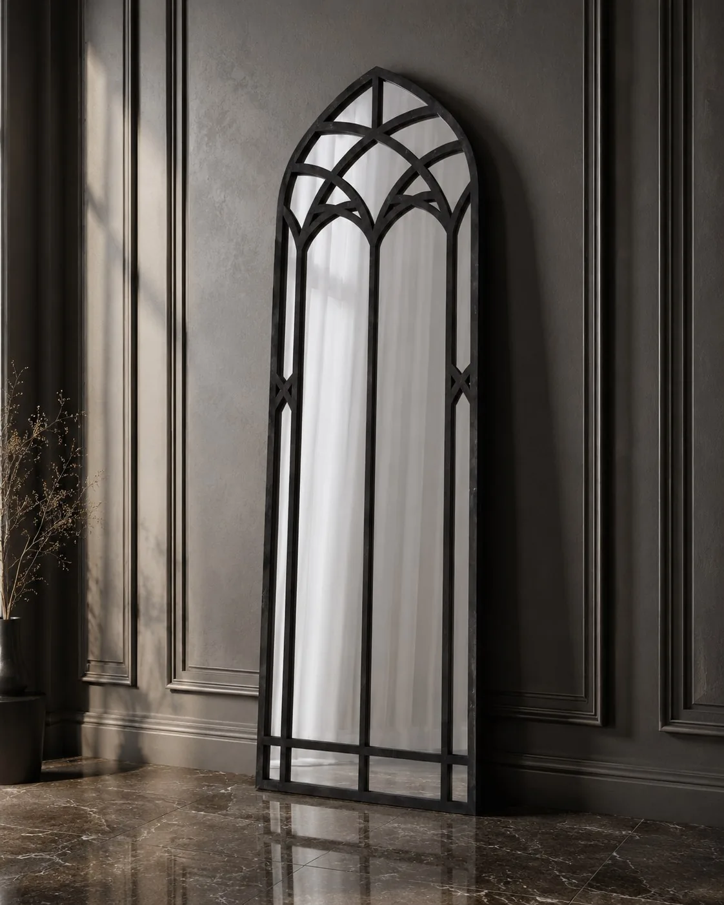

Maison Caligari
An independent design project exploring how gothic architectural language can become contemporary furniture without turning the pieces into theatrical props.

- Challenge
- Translate gothic architectural geometry into useful contemporary furniture without relying on decorative pastiche.
- Role
- Concept, product design, identity, art direction, 3D visualisation, website and digital communication.
- Process
- Build a repeatable grammar of pointed arches, tracery, dark timber and metal, then test it across storage, display furniture and mirrors.
- Outcome
- A coherent brand and growing collection whose products, imagery and communication share the same design rules.
- What I learned
- A strong identity comes from applying a system consistently, not from adding more decoration.
The challenge
Gothic references are immediately recognisable, but they can become decorative clichés very quickly. The project asks how arches, tracery, pointed profiles and dark materiality can be reduced into a coherent furniture language that still feels useful, contemporary and manufacturable.
One visual grammar, different scales and functions
The collection moves from storage and display furniture to mirrors. Repeated curves and pointed geometry create continuity, while each piece responds to a different use, proportion and material expression.




My contribution
Maison Caligari is where I bring several parts of my experience together. I develop the furniture concepts, geometry and material direction; create the brand identity and editorial language; direct and produce the visualisations; and build the website and digital communication around the collection. It is both a design brand in development and a laboratory for product, space and image.
The project is not about decorating furniture with gothic motifs. It is about building a system in which the geometry, materials, images and brand all speak the same language.Visit Maison Caligari